48
Vayalar Ramavarma sings that the Earth which was a fireball that fell from the Sun into
the pond of void and slept lying frozen, and on waking up, draped herself with the moist
life particles.
Our earth which is rich with atmosphere, water and favourable climate is the only celestial
body in the universe which is found to sustain life.
We have become familiar with the shape, the movements and other characteristics of the
earth in the previous classes.
The images of the earth captured from the space show us a clear picture of the shape of
the earth.
Does the earth really have a spherical shape?
The earth has a unique shape which is slightly flattened at the poles and slightly bulged
in the middle. This shape of the earth is known as Geoid.
സൂൂര്യയനിിൽ നിിന്നൊųൊരു ചുുടുുതീീക്കുുടമാായ്്
ശൂൂന്യാാ�കാാശ സര
സ്സിിൽ
വീീണുുതണുുത്തുുകിടന്നു മയ
ങ്ങിി-
യുണർന്നവളല്ലോƽോ ഭൂൂമി.
വാായുവിലീീറൻ ജീീവകണങ്ങളെ�
വാാരിച്ചൂൂടിയ ഭൂൂമി.
അവലംംബംം
അവലംംബംം : ഭൂൂമിി സനാാഥയാാണ്് - വയലാാർ രാാമവർമ്മ
: ഭൂൂമിി സനാാഥയാാണ്് - വയലാാർ രാാമവർമ്മ
4
From the Globe to the Map
Page 48
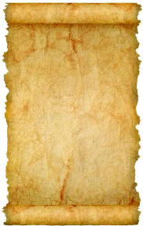

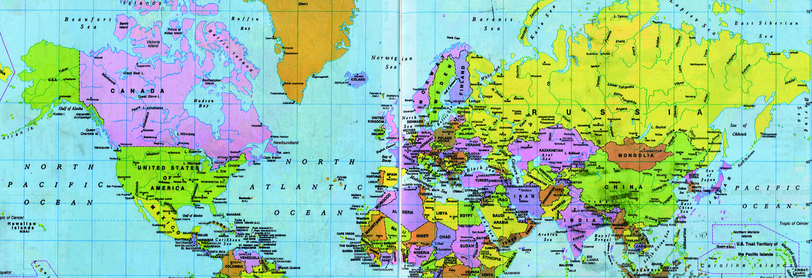
Page 49

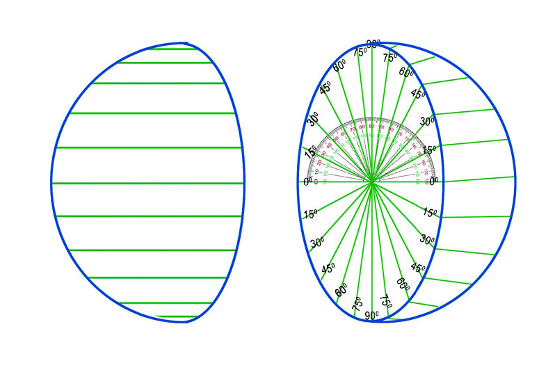
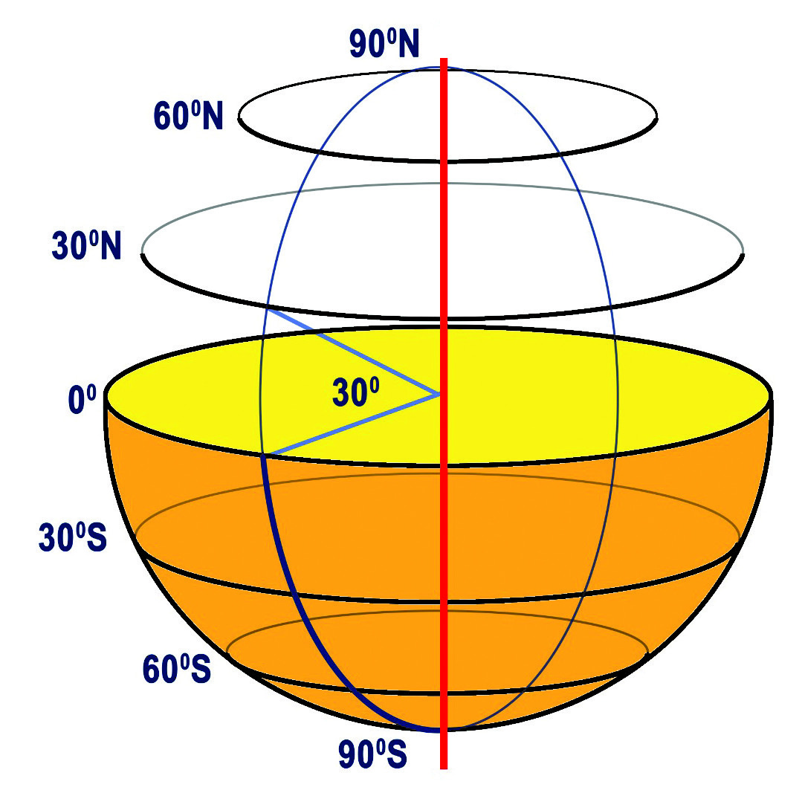
49
Social Science Class VI
Social Science Class VI
From the Globe to the Map
The globe is the true model of the earth. It is used to understand geographical features
on the surface of the earth and to determine the location.
You have become familiar with the horizontal and the vertical lines on the globe in the
previous classes. Let us learn more about the features of these lines.
Lines of Latitude (Parallels of Latitude)
Lines of latitude are imaginary lines that connect the points in the same angular distance
on both sides of the equator with reference to the earth's centre. These are latitudinal
circles that are drawn parallel to the equator on the earth's surface.
Shall we draw lines of latitude?
Cut a rubber ball which is not hollow, into two halves. Mark angular measures
from 0° to 90° on both the halves as shown in the picture, using a protractor.
Draw lines based on the angular measures and
join them at the centre of the half, as seen in the
picture. Now extend these lines to the surface
and join the equal angular measures. Then draw
lines on the other half as well. Paste the two
halves back together. You will get a ball with
lines of latitude.
Fig. 4.1
Observe Fig. 4.1 and find out the largest Circle
of Latitude.
You have found out that the 0° Circle of Latitude
is the largest one. This is the Equator.
Observe the lines of latitude drawn to the north
and the south of the equator on the globe. Are
all the circles of latitude equal in size?
We can see that as we move from the equator
towards the poles, the circles of latitude get
smaller in size.
Page 50
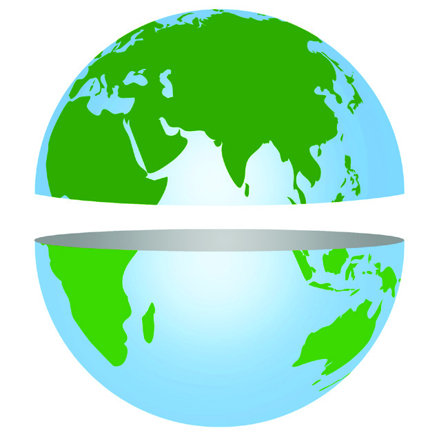
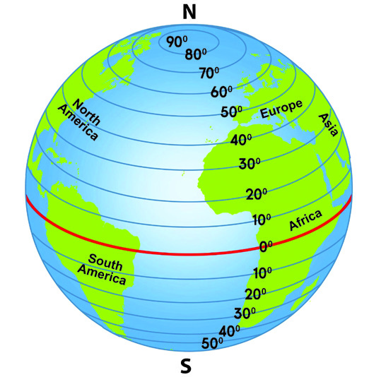
Social Science Class VI
Social Science Class VI
50
Part I
Based on the equator, the earth can be imagined as two
hemispheres. The hemisphere that lies to the north of the
equator is called Northern Hemisphere and the hemisphere
that lies to the south of the equator is called Southern
Hemisphere.
Observe the globe and complete the table.
Continents in the
Northern Hemisphere
Continents in the
Southern Hemisphere
Continents spread
across both the
Hemispheres
You have noticed that the circles of latitude become smaller
in size as we move from the equator towards the north and
the south, haven't you? It can be seen that the latitudinal
circles gradually decrease in size and end at 90° point in the
north and 90 ° point in the south. The 90° latitude in the
north is called the North Pole and the 90° latitude in the
south is called the South Pole.
Latitudes in the north of the equator are called Northern
Latitudes and those in the south are called Southern Latitudes.
South Pole
South Pole
North Pole
North Pole
90oN
90oS
Northern Hemisphere
Northern Hemisphere
Southern Hemisphere
Southern Hemisphere
N
S
Fig. 4.2
Fig. 4.4
This illustration is for
conceptual clarity.
Fig 4.3
Observe the North Pole and the South Pole in the picture. If a straight line is imagined
Page 51
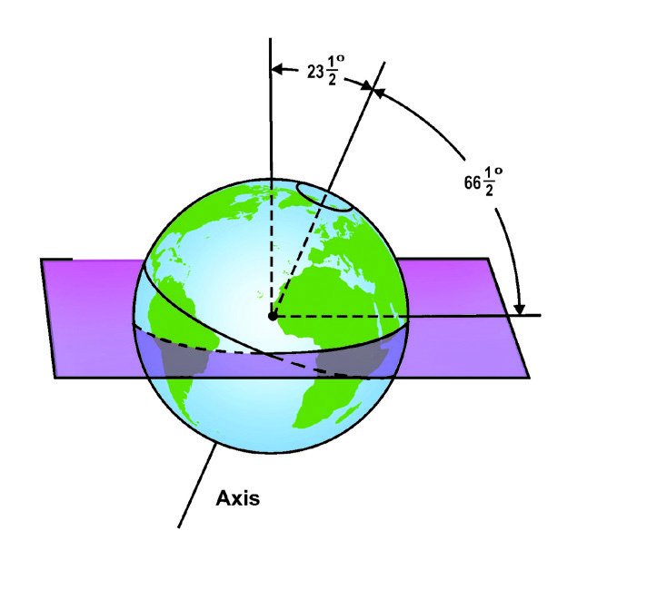
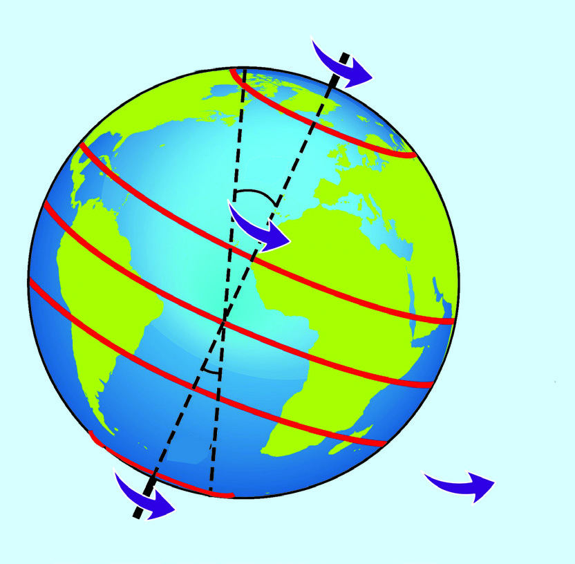

51
Social Science Class VI
Social Science Class VI
From the Globe to the Map
Lines of Longitude (Meridians of Longitude)
The imaginary lines drawn on the surface of the Earth connecting the North Pole and
the South Pole with reference to Earth's centre are called the Lines of Longitude. These
are semi circles of the same size. Time on the earth is determined based on the lines of
longitude. 0° longitude and 180° longitude are important longitudinal lines. Imagine that
longitudinal lines are drawn at1° interval connecting both poles. Then we can draw 360
longitudinal lines.
through the centre of the earth connecting the poles, that is the Earth's axis. The
Earth rotates on this imaginary axis. The axis is inclined at an angle of 23½° from the
perpendicular to the orbital plane. Observe Fig 4.5 (B) and identify the inclination of the
earth's axis.
90O North
0O
23½ South
66½
½ North
O
66½ South
O
O
23½ North
O
90O South
23
23½
O
23
23½
O
Equator
Tropic of Capricorn
Tropic of Cancer
Antarctic Circle
Arctic Circle
Fig. 4.5 (A)
Observe Fig 4.5 (A) and complete the table of important lines of latitude.
Important lines of latitude
Measure in degree
Equator
0O
Tropic of Cancer
........................................................
........................................................
23½O south
Arctic circle
........................................................
Antarctic circle
66½O south
This illustration is for
conceptual clarity.
This illustration
is for conceptual
clarity.
Fig. 4.5 (B)
Perpendicular to
the orbital plane
Orbital
plane
Page 52

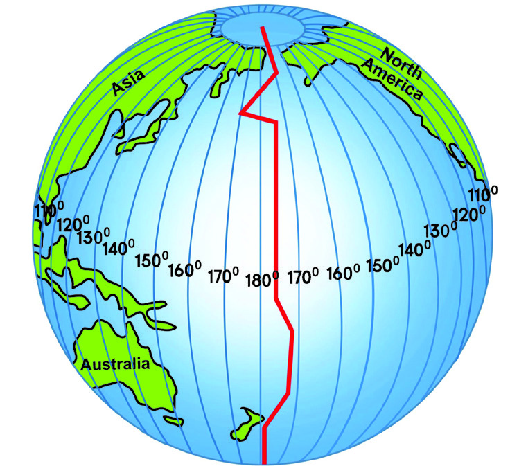
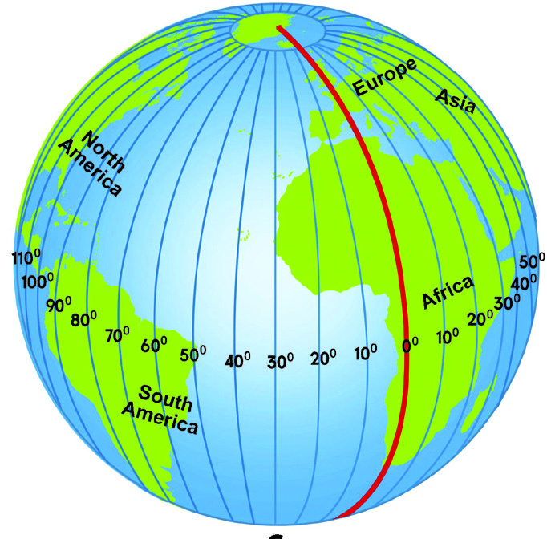
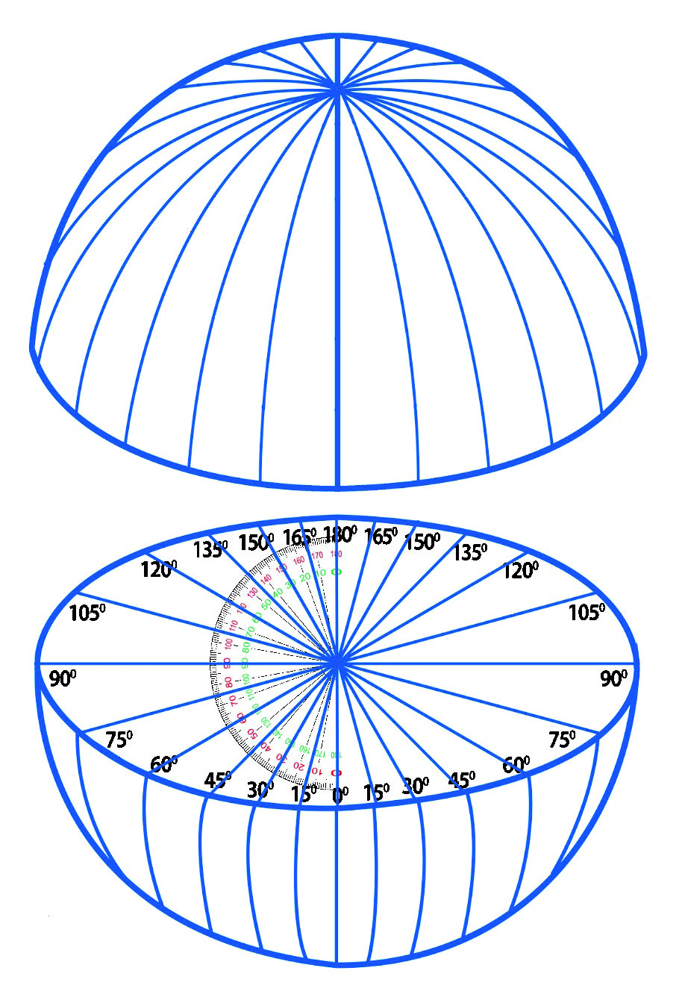
Social Science Class VI
Social Science Class VI
52
Part I
Draw lines of longitude on a ball
and mark the measurements just
as you drew the lines of latitude.
Observe Fig 4.6 and Fig 4.7. Haven't you noticed how the important lines of longitude
are specifically marked? Examine the globe and identify these lines. What are their
peculiarities?
N
S
Fig 4.6
The 0° line of longitude is called the Prime Meridian. Since this line passes through
Greenwich near London, this line is also called Greenwich Meridian. The longitudinal
line drawn opposite to 0° longitudinal line is the 180° longitudinal line. Based on this
the International Date Line has been drawn. The International Date Line is not a straight
Important lines of longitude
Fig 4.7
Fig.4.6 and 4.7 are for
conceptual clarity.
N
S
Page 53
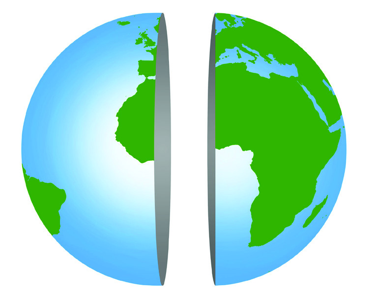
53
Social Science Class VI
Social Science Class VI
From the Globe to the Map
Western Hemisphere
Eastern Hemisphere
Fig. 4.8
Fig 4.9
line. Find out the reason. Based on the Prime Meridian the earth can be divided into the
Eastern Hemisphere and the Western Hemisphere. The longitudinal lines to the east of
Prime Meridian are called Eastern longitudes and those to the West are called the Western
longitudes.
Observe Fig 4.8. Identify Western Hemisphere and Eastern Hemisphere. With
the help of a globe, identify the position of the following countries in their
respective hemispheres and write them against each country.
• India
...........................................................
• United States of America
...........................................................
• Brazil
...........................................................
• Indonesia
...........................................................
We are now familiar with the latitudinal and longitudinal
lines. The exact location of a place, a region or an object
on the earth is determined based on the latitudinal and
longitudinal lines.
Look at the illustration of the Lines of latitude and Lines
of Longitude (Fig 4.9). This is a network of lines of
latitude and longitude. This is called the Graticule. We
can see the network of the latitudinal and longitudinal
lines on maps and atlas.
Page 54
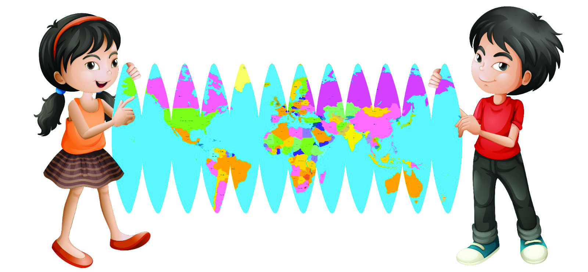
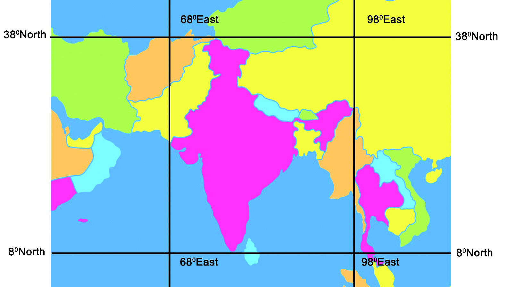

Social Science Class VI
Social Science Class VI
54
Part I
Fig 4.10
Observe the picture.
Identify the location of
India with reference to the
latitudinal and longitudinal
lines and list them.
Location of India
Latitude
From .............................. To .................................
Longitude
From .............................. To .................................
Map Projections
Will the globe alone be enough for a close study of the characteristics of the earth's
surface ?
It is the network of the lines of latitude and longitude that helped us to determine the
location of India on earth. This network of latitudes and longitudes provides the framework
for map making (Cartography).
You may be aware that a map is a depiction of the features of earth's surface on a flat
surface. Though the surface of the earth is curved, the map has to be made on a flat
surface. Drawing the features of spherical surface on a flat surface is a major challenge
in Cartography. How can we make a map by flattening a globe? Shall we try flattening,
as shown in Fig 4.10?
Map not to scale
Page 55
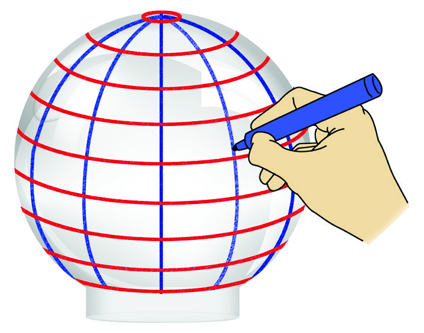
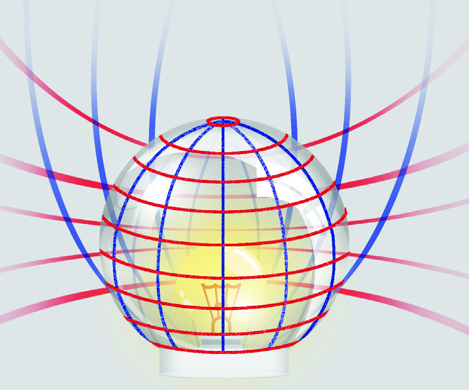
55
Social Science Class VI
Social Science Class VI
From the Globe to the Map
You can see that the polar regions and some continents got cut when the globe was
made flat. If we make a map by flattening the globe like this we would get a distorted
map. Cover the globe using a tracing paper and try to draw the continents. Won't we get
a distorted map full of wrinkles and folds. How can we make a map without such flaws,
by copying the features of the globe's surface, which is spherical, onto a flat surface? For
this, the method called Map Projections is used.
Map projection is the method by which the network of the lines of latitude and longitude
(Graticule) is scientifically transferred to any flat surface. The traditional method of map
projections is drawing the lines of latitude and longitude, and other geographical features
on a flat surface by placing a light source inside a transparent globe.
Shall we see how it is done? Keep a glass jar upside
down. Draw lines of latitude and longitude on the
surface of the jar using a marker, as shown in the
picture.
Place a developable surface on this glass jar. Now
place a light source inside the jar. What do you see?
You can see that the shadow of the lines of latitude
and longitude drawn on the jar is cast on the flat
surface. Now draw this graticule on the flat
surface. After marking the degree values of the
latitudinal and longitudinal lines, you can make
the map by drawing continents or countries
based on them. In this way, the map of any
region on earth can be constructed by copying
the network of the latitudinal and longitudinal
lines. This is made possible by using surfaces of
various shapes. By changing the position of the
surface and the source of light, different types
of map projections can be prepared. Based on
the shape of the developable surface, map projections can be categorised into three. Let's
become familiar with these, shall we?
Fig. 4.11
Fig. 4.12
Page 56
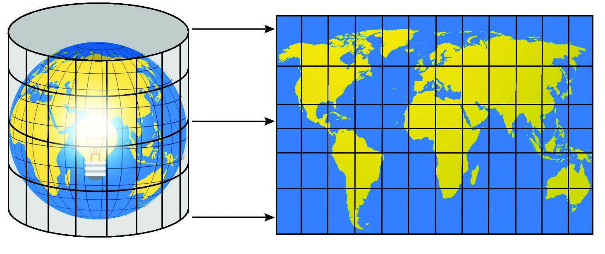
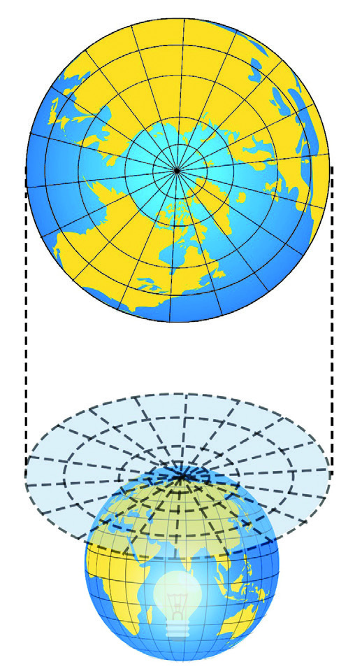
Social Science Class VI
Social Science Class VI
56
Part I
Cylindrical Projection
Observe Fig 4.13.
A source of light is placed inside a transparent globe. A cylinder shaped surface is placed
covering the globe. The network of lines of latitude and longitude is transferred to the
cylindrical surface covering the globe. This is called a Cylindrical Projection. This map
projection can be used for the exact mapping of equatorial regions.
Fig. 4.13
The map we get when the
geographical features are
projected on a cylindrical
surface.
Fig. 4.14
Zenithal Projection
Observe Fig 4.14 and find out which region's network
of latitudinal and longitudinal lines are transferred using
Zenithal Projection.
A source of light is kept at the centre of a transparent
globe and a flat surface is kept on the top. The network
of the lines of latitude and longitude is projected onto the
flat surface when the source of light is lit. In this way, the
network of the lines of latitude and longitude is prepared
using Zenithal Projection.
The map obtained when the
geographical features of the
polar regions are projected
on a flat surface.
Fig 4.13 and 4.14
are illustrations for
conceptual clarity and
are not according to
scale
Page 57
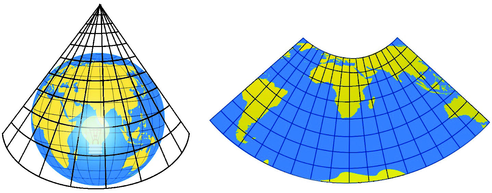

57
Social Science Class VI
Social Science Class VI
From the Globe to the Map
Conical Projection
Fig. 4.15
The map that we get when the network
of the lines of latitude and longitude are
transferred to a conical surface.
The method of projection by which the network of latitudinal and longitudinal lines are
transferred to a conical surface is called the Conical Projection. The shadow of latitudinal
and longitudinal lines is projected to a conical surface to make the map. This map
projection is used more to make the maps of mid-latitude regions.
Complete the concept map that includes the characteristics of Map
Projections.
Cylindrical
projection
........................
........................
• developable surface is flat
• mostly used for the illustration of
Polar regions
............................
.....................
.................................................
.................................................
.................................................
.................................................
Characteristics
Characteristics
Characteristics
This illustration is for
conceptual clarity and not
according to scale
Page 58

Social Science Class VI
Social Science Class VI
58
Part I
We have become familiar with the three types of map projections, haven't we?
In addition to map projections mathematical techniques are also used to transfer
geographical features to a flat surface. Nowadays, maps are being made keeping precision
and accuracy with the help of innovative technology.
GIS Mapping Initiative started in the Corporation
digitisation initiative
has been started in the
corporation using GIS.
With
the
aim
of
making data collection
more accurate, fast
and
scientific
the
To identify the exact location, direction and altitude from sea level, of all natural and
man-made geographical features, geographical analysis and map reading are essential.
Different maps that illustrate various water resources, forests, agricultural lands, arid
regions, villages, towns, and transport and communication facilities are being used widely
in modern times. The changes that happen when the geographical features of the earth
represented on a globe are transferred to a flat surface are now familiar, isn't it. Proper
map reading is essential when we use maps in our daily lives.
List the various day-to-day instances in which we use GIS.
Have you observed the news?
Have you ever thought what Geographic Information System is? It is the method of
collecting, analysing and storing geographic information and presenting it in the form
of maps, graphs and tables whenever needed. Maps are also used as one of the primary
sources of information in the GIS. With the help of computers, maps are converted to
digital forms by fixing the latitudinal and longitudinal positions. Data is collected from this
digital map as the base map and is used for different purposes. This technology can be
used in various fields such as cartography, resource conservation, disaster management,
tourism, transportation and communication.
Page 59

59
Social Science Class VI
Social Science Class VI
From the Globe to the Map
Extended Activities
Countries belonging to
the northern hemisphere
Countries belonging
to the southern
hemisphere
Countries that
spread across both
hemispheres
• Complete the worksheet given below.
The largest circle of latitude
Equator
The hemisphere that is situated to the north of the
equator
.................................
...............................................................
The Southern
Hemisphere
Imaginary lines that are drawn connecting the
North and South poles with the earth's centre as
reference
.................................
0° longitudinal line
.................................
................................................................
International Date Line
• Complete the table by finding the latitudinal and longitudinal locations of the
following countries, just like India's latitudinal and longitudinal location was
identified, using the globe, atlas and world map.
Country
Latitude
Longitude
1
Japan
From .............
to ..................
From .............
to ..................
2
Sri Lanka
From .............
to ..................
From .............
to ..................
3
Australia
From .............
to ..................
From .............
to ..................
• Mark the hemispheres to which these countries belong with the help of
a globe, atlas and world map.
Brazil
Norway
Canada
Indonesia
South Africa
Kenya
Saudi Arabia
Argentina
Angola